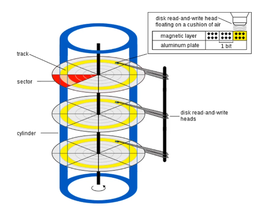

Kernel
Development Part 2: The Interrupt Vector Table and Real Mode IO
Interrupts are like subroutines that you call through ‘interrupt
numbers’ rather than memory addresses. There are interrupts pre-defined
in the BIOS - in the previous post we saw 10h 0eh prints a
character to the screen - or they can be set up by the programmer.
Interrupts are special because they halt the processor, save the current
state (meaning what? the registers?) to the stack, execute the
interrupt, then restore the pre-interrupt state.
The code for these interrupts are stored in RAM. The locations of the
code are stored in the interrupt vector table
(IVT)11 All of
this only applies to Real Mode. In Protected Mode, an “Interrupt
Descriptor Table” is used instead. More on this later ,
which starts right at the beginning of RAM at address
0x00. There are 256 entries in numerical order,
0x00 to 0xFF, and each contains a 4 bytes: a 2
byte OFFSET and a 2 byte SEGMENT. This means you can calculate the
location in the IVT of any interrupt code with code * 0x04.
Interrupt 0x13 is at
0x46.22 Layout
of the IVT:
The processor can throw exceptions with interrupts. For example, if
you try to divide by zero in an Intel processor, it will call interrupt
0.33
wiki.osdev.org/exceptions is a great resource for learning more
In the following code, we replace interrupt 0 with our own
subroutine, by replacing the entries in the IVT to point to the
subroutine in memory. Running our bootloader in this state will cause
the screen to show AHello World!A - the first
A comes from our manual call to the int 0, and
the second comes from our attempt to divide by zero, which causes the
processor to run interrupt 0.
start:; snipmovword[ss:0x00], handle_zero ; Set offset to handle_word addressmovword[ss:0x02],0x07C0; set segment to 0x07c0 int0; call interupt 0movsi, messagecall printmovax,0x00divax; try to divide by 0jmp$handle_zero:movah,0ehmoval,'A'movbx,0x00int0x10iret; snip
Reading from disk
Next we will see how we can read data from a hard disk. Note that
we’re not talking about accessing files. Files and the file
system are implemented in the Kernel. Or to be more specific, the disk
is ‘formatted’ with a particular file system data structure (FAT, EXT4
etc.), and the kernel has drivers which are able to interpret that data
structure as files. As far as we are concerned, the disk consists of
blocks of data called
sectors44 We
already encountered sectors when talking about how the bootloader is
loaded. .
A sector consists of 512 contiguous bytes. These sectors are read and
written in sector blocks, not by accessing individual
bytes.55 Since
you can only read in sectors, to calculate a specific place on the disk
using LBA you need to calculate the sector and the offset. This is
simply a matter of getting the quotient and the modulus. So to get to
byte 58376 you calculate the LBA sector by 58376/512=114,
and the offset as 58376%512=8

Disk
The old way of addressing disk sectors is the Cylinder Head
Sector (CHS) system. This is from when disks were spinning magnetic
plates arranged in cylinders. You need to specify the cylinder, head,
sector and track you want to read from. This was pretty complicated, and
it is no longer really used. The modern way is called Logical Block
Address (LBA). In LBA you just specify the sector number you want
to get. LBA 0 is the first sector on the disk,
etc.55 Since
you can only read in sectors, to calculate a specific place on the disk
using LBA you need to calculate the sector and the offset. This is
simply a matter of getting the quotient and the modulus. So to get to
byte 58376 you calculate the LBA sector by 58376/512=114,
and the offset as 58376%512=8
Some
housekeeping before we actually read from the disk
First create a text file and put in it whatever you want. This is
going to be the thing that gets read from the disk. Create a
Makefile66 Make
is a language unto itself, intended to simplify the compilation of
project with multiple files. .
The first line is same assemble command we’ve already been using. The
second line puts the content of message.txt onto the end of our
binary, and the third pads the binary out with null characters until
it’s 512 bytes, and therefore a valid sector. You can type
make at the command line to compile the project. You can
see the content of the binary with
hexdump -C ./boot.bin > hex.txt, and opening the text
file.
Time to actually read from
the disk
We’ll be using interrupt 13h/02h: “Disk - Read Sectors
into Memory”. Looking at the expected register values that Ralph Brown
provides77AH = 02h, AL = number of sectors to read,
CH = cylinder number, CL = sector number,
DH = head number, ES:BX -> data buffer.
Return: CF set on error
we can get to the follow code:
movah,02hmoval,1movch,0movdh,0movcl,2movbx, bufferint0x13jc error ; if carry flag is set, meaning load failedmovsi, buffercall print; snip to end of fileerror_message:db'Failed to load sector',0times510-($-$$)db0; Pad to 510th bytedw0xAA55; dw=define word. Puts bootloader signalbuffer:
Here we set up the registers as they need to be to read our message
from the 2nd sector (cl) of the disk into the
buffer label in
memory88 Note
that the data is put into ES:BX, the Extra Segment. We have
set this to 0x7c0, which is the right place. .
Then we call the interrupt 0x13. jc handles
the error condition.